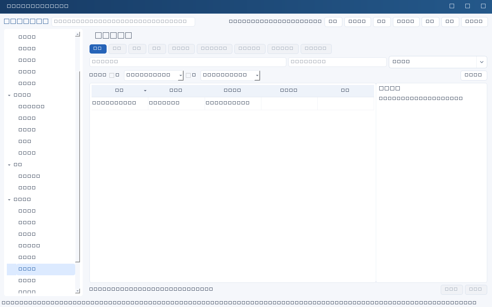
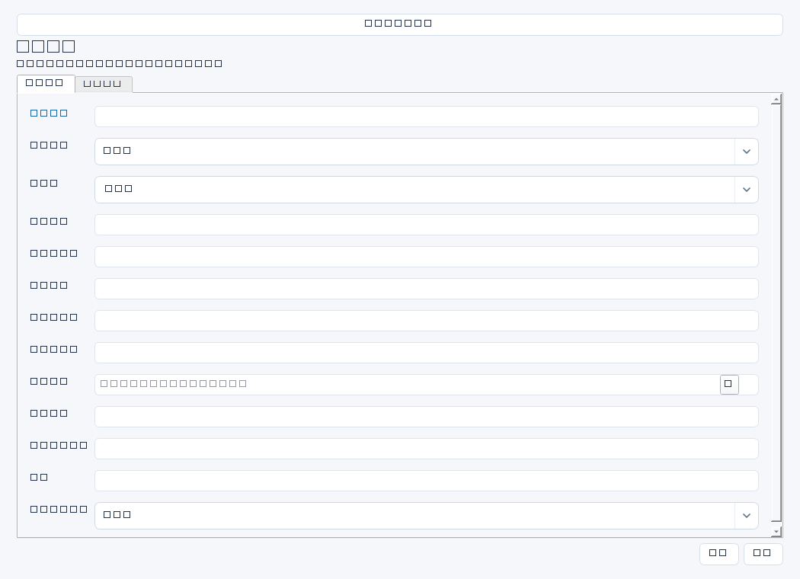

记录业务系统备份策略与恢复演练的目标、实测和证据，验证备份是否真正支持业务连续性。此模块不会执行备份或连接生产系统恢复数据。


操作步骤与资料获取
- 从系统台账及业务影响分析取得RTO/RPO目标，向运维取得备份任务配置、覆盖范围、保留和隔离策略。
- 制定隔离演练方案，确认授权、数据保护、业务验证样本和环境清理要求，避免演练覆盖生产。
- 在外部实际执行恢复，记录开始至业务可用的实测耗时和恢复点数据缺口；保存日志、截图与业务核对材料。
- 将实测与同口径目标比较，填写结论；不达标时建立整改任务并关联，复测时保留原失败证据。
字段逐项说明
| 操作 / 字段 | 详细说明 |
|---|---|
| 名称 | 策略或演练标题，强制非空；建议系统＋日期＋恢复场景。 |
| 系统ID | 被验证系统；非空时强制引用有效systems记录。 |
| 负责人 | 负责备份策略或组织演练的人名，建议与业务确认人分工明确。 |
| 备份范围 | 列数据库、应用配置、文件、密钥恢复依赖等覆盖及排除项；不要把真实密钥写入记录。 |
| 频率及保留 | 写全量/增量/日志频率、保留周期和副本数量，依据配置和策略原件。 |
| 隔离策略 | 写离线、异地、不可变或账户隔离等控制及核验依据；不要只写“异地”而忽略同权限域风险。 |
| RTO小时 | 本次验证使用的恢复时间目标，单位小时；非空时强制非负十进制纯数字，不从系统记录自动同步。 |
| RPO小时 | 本次验证使用的可容忍数据缺口目标，单位小时；非空时强制非负十进制纯数字。 |
| 演练日期 | 实际执行演练日期；非空时强制YYYY-MM-DD。 |
| 实际耗时 | 实测恢复耗时，建议统一用小时与RTO比较；非空时强制非负十进制纯数字，软件不验证单位或计时范围。 |
| 实际数据缺口 | 恢复点与目标时点之间的数据时间差，建议用小时与RPO比较；非空时强制非负十进制纯数字。 |
| 结论 | 写目标是否达成、业务核对是否通过、未覆盖场景和改进事项；自由文本，不自动根据数值作最终业务结论。 |
| 证据 | 备份配置、恢复日志、计时记录、数据抽样及业务签认的编号、位置与日期；只是文本索引。 |
| 整改任务ID | 不达标或有缺口时关联跟踪任务；非空时强制引用有效tasks记录，不自动创建。 |


示例（仅演示）
| 操作 / 字段 | 详细说明 |
|---|---|
| 名称 | ERP—2026-04-12离线副本隔离恢复演练 |
| 系统ID | |
| 负责人 | 陈晨 |
| 备份范围 | ERP数据库、应用配置和接口配置；不含生产凭证明文 |
| 频率及保留 | 每日全量、每小时日志；全量保留30天，月度副本保留12个月 |
| 隔离策略 | 离线副本与生产账号隔离；在无生产路由测试区恢复 |
| RTO小时 | 4 |
| RPO小时 | 1 |
| 演练日期 | 2026-04-12 |
| 实际耗时 | 2.5 |
| 实际数据缺口 | 0.5 |
| 结论 | 技术目标达成，20笔财务单据核对通过；未覆盖异地网络全断场景 |
| 证据 | DR-20260412、恢复日志及财务签认；受控资料库/连续性/20260412；耗时与缺口均按小时 |
| 整改任务ID |
形成闭环
- 同时核对技术恢复、数据一致性和业务可用，不只比较两个数字。
- 清理演练环境和测试数据，确认没有影响生产，保留清理及签认记录。
- 整改后复测，保留前后报告；无状态字段，通过与否在结论说明。
常见误区与边界
- 备份作业成功不等于恢复成功，必须验证可读与可用。
- 实际耗时用分钟而RTO用小时，直接比较得出错误结论。
- 把RPO写成备份保留天数，或把数据缺口写成缺失条数而未统一单位。